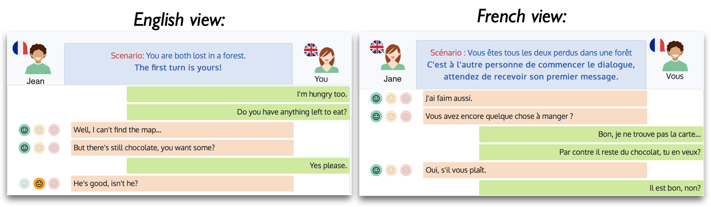
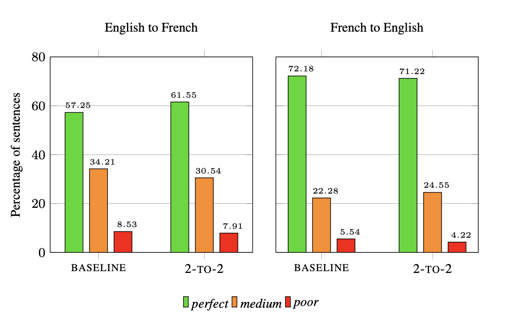
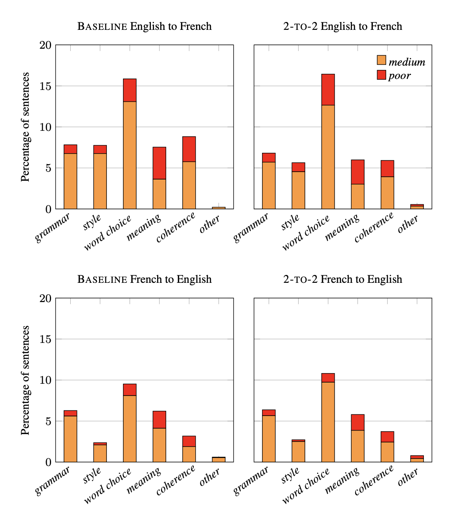

The dataset is an English-French dataset for the evaluation of Machine Translation (MT) for informal, written bilingual dialogue.
The dataset contains 144 spontaneous dialogues (5,700+ sentences) between native English and French speakers, mediated by one of two neural MT systems in a range of role-play settings. See below for some basic statistics.
The dialogues are accompanied by fine-grained sentence-level judgments of MT quality, produced by the dialogue participants themselves, as well as by manually normalised versions and reference translations produced a posteriori. See here for information about evaluation.
The motivation for the corpus is two-fold: to provide
Participants are either English or French native speakers and they interact through a dedicated online chat tool. They write in their native language and their utterances are automatically translated into the other language using one of two MT model types: (i) a baseline RNN NMT model and (ii) a lightly contextual RNN NMT model that takes into account the preceding sentence.
Each participant therefore sees the entire dialogue in their native language (i.e. they only see the machine-translated versions of their partner's original utterances. An example of the interface and the same dialogue as seen by both users:
The interface is constructed on top of this simple chat Flask example, and the modified code can be found online here.
Some more information about the MT models used:
Full technical details on the training of the models can be found in the paper. Both models are RNN-based encoder-decoder models with attention, trained on OpenSubtitles2016 data (Lison and Tiedemann, 2016).
There are a total of 12 scenarios (with associated roles for each participant). The scenarios were used an equal number of times for each MT model type and the roles were assigned randomly at the beginning of the dialogue. The scenario and roles were provided in either French or English depending on the language of the speaker.
Human translations of all sentences were produced a posteriori by native speakers of each target language (English and French). They were then post-edited and verified by a bilingual speaker. Particular attention was paid to the naturalness of the translations, avoiding overly literal or stilted translations. The translations respected source sentence boundaries, but the translation could contain several sentences.
The users only see the machine-translated versions of their partner's utterances (they see the entire dialogue in their native language). However, they evaluate those utterances according to their knowledge of the language and what seems coherent with respect to the dialogue.
Three types of evaluations:
The results of the evaluation showed that there were some perceptible differences in the two types of model and between the language directions:
The coarse-grained results (percentage of sentences with each rating) gave the following:
The evaluations are very similar for both model types. For English-to-French, there is a slight preference for the contextual model (+4.3% of 'perfect' sentences). For French-to-English, the percentages are much similar, with -0.96% 'perfect' sentences for the contextual model. In both cases, the percentage of 'poor' sentences is decreased for the contextual model.
And a breakdown of the different errors for each model (percentage of sentences containing a specific error type) was as follows:
There are far more errors noted for English-to-French, the most prevalent one being 'word choice'. The contextual 2-to-2 model produces slightly more word choice errors than the baseline. However, the percentage of sentences with coherence errors and with style errors is reduced when using context.
More details can be found in the paper.
Some basic statistics concerning the corpus collected:
| Language direction | En2Fr | Fr2En | All |
|---|---|---|---|
| #Turns | |||
| Total | 1,067 | 1,089 | 2156 |
| Mean per dialogue | 7.4 | 7.6 | 15.0 |
| #Sentences | |||
| Total | 2,865 | 2,883 | 5,748 |
| Mean per dialogue | 19.9 | 20.0 | 39.9 |
| Min. / Max. per dialogue | 5 / 42 | 5 / 60 | 10 / 102 |
| Mean per turn | 2.7 | 2.6 | 2.7 |
| Min. / Max. per turn | 1 / 9 | 1 / 10 | 1 / 10 |
| #Tokens (original messages) | |||
| Total | 27,817 | 29,058 | 56,875 |
| Total unique | 3,588 | 4,244 | - |
| Mean per dialogue | 193.2 | 201.8 | 395.0 |
| Mean per sentence | 9.7 | 10.1 | 9.9 |
| #Tokens (MT versions) | |||
| Total | 28,745 | 27,510 | 56,255 |
| Total unique | 3,698 | 3,141 | - |
| Mean per dialogue | 199.6 | 191.0 | 390.7 |
| Mean per sentence | 10.0 | 9.5 | 9.8 |
| #Tokens (reference translations) | |||
| Total | 30,093 | 27,014 | 57,107 |
| Total unique | 4,361 | 3,556 | - |
| Mean per dialogue | 209.0 | 187.6 | 396.6 |
| Mean per sentence | 10.5 | 9.4 | 9.9 |
Some basic statistics concerning the 75 different participants:
| En | Fr | All | |
|---|---|---|---|
| Total number | 37 | 38 | 75 |
| #Researchers | 7 | 17 | 24 |
| #Experience in NLP | 6 | 14 | 20 |
| #Female/#Male | 21 / 16 | 16 / 22 | 37 / 38 |
| Min. age | 18-24 | 18-24 | 18-24 |
| Max. age | 65-74 | 65-74 | 18-24 |
| Median age | 55_64 | 25-34 | 35-44 |
| Modal age | 55-64 | 25-34 | 25-34 |